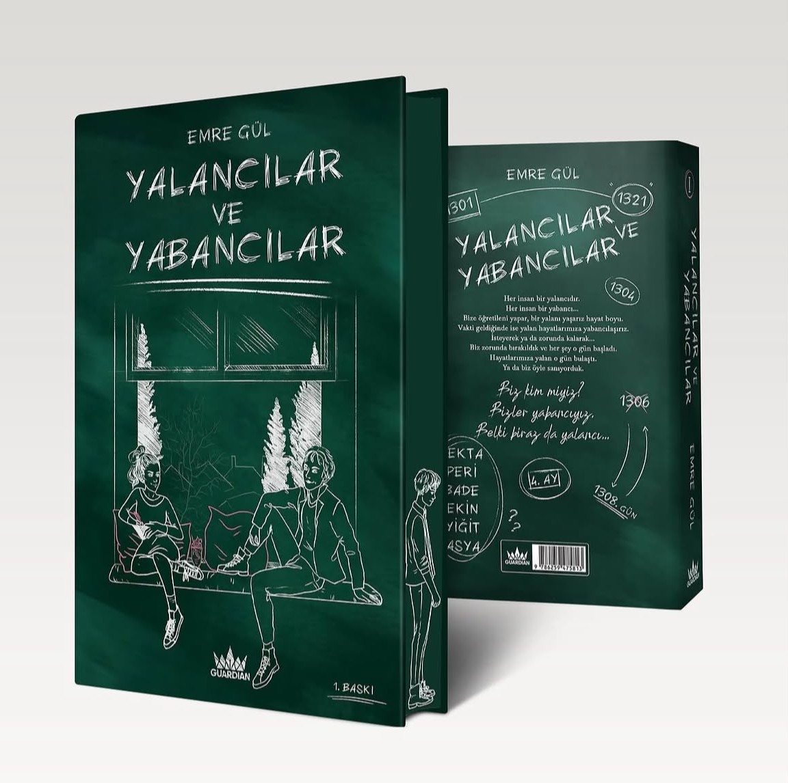

Her insan bir yalancıdır. Her insan bir yabancı... Bize öğretileni yapar, bir yalanı yaşarız hayat boyu. Vakti geldiğinde ise yalan hayatlarımıza yabancılaşırız. İsteyerek ya da zorunda kalarak... Biz zorunda bırakıldık ve her şey o gün başladı. Hayatlarımıza yalan o gün bulaştı. Ya da biz öyle sanıyorduk.
Biz kim miyiz?
Bizler yabancıyız.
Belki biraz da yalancı...